Code
library(tidyverse)
library(dplyr)
library(tidyr)
library(ggplot2)
library(ggrepel)
library(ggpmisc)
library(stats)
library(patchwork)
library(reshape2)library(tidyverse)
library(dplyr)
library(tidyr)
library(ggplot2)
library(ggrepel)
library(ggpmisc)
library(stats)
library(patchwork)
library(reshape2)Load the raw expression datasets
dset_dir <- file.path("/Users/saideepgona/Library/CloudStorage/Box-Box/imlab-data/data-Github/analysis-Sai/enformer_geuvadis/enformer_epistasis")
haplo1 <- as.data.frame(read_csv(file.path(dset_dir,"CAGE_lcl_enformer_geuvadis_summed_haplo1_filtered.csv")))
rownames(haplo1) <- haplo1$...1
haplo1$...1 <- NULL
haplo2 <- as.data.frame(read_csv(file.path(dset_dir,"CAGE_lcl_enformer_geuvadis_summed_haplo2_filtered.csv")))
rownames(haplo2) <- haplo2$...1
haplo2$...2 <- NULL
geuvadis_full <- as.data.frame(read_table(file.path(dset_dir,"GD462.GeneQuantRPKM.50FN.samplename.resk10.txt")))
geuvadis <- separate(geuvadis_full, 2, "Gene_Symbol_uv")
rownames(geuvadis) <- geuvadis$Gene_Symbol_uv
geuvadis <- geuvadis[,5:ncol(geuvadis)]Load metadata
metadata_dir = "/Users/saideepgona/Library/CloudStorage/Box-Box/imlab-data/data-Github/analysis-Sai/metadata"
individual_metadata <- as.data.frame(read_delim(file.path(metadata_dir,"igsr_samples.tsv")))
rownames(individual_metadata) <- individual_metadata$`Sample name`
table(individual_metadata$Superpopulation.code)< table of extent 0 >gene_metadata <- as.data.frame(read_delim(file.path(metadata_dir,"gene_metadata_full.csv")))
rownames(gene_metadata) <- as.character(gene_metadata$...1)
gene_metadata$...1 <- NULL
# gene_names <- read.table(file.path(dset_dir,"protein_coding.tsv"), header = TRUE)
# gene_names <- separate(gene_names, 2, "Gene_Symbol_uv")
# gene_names <- gene_names[!duplicated(gene_names[, "gene_name"]),]
#
# rownames(gene_names) <- gene_names$Gene_Symbol_uv
# # rownames(gene_names) <- gene_names$gene_name
#
# geuvadis_gene_names <- gene_names[gene_names$Gene_Symbol_uv %in% rownames(geuvadis),]
# geuvadis <- geuvadis[rownames(geuvadis) %in% geuvadis_gene_names$Gene_Symbol_uv,]
#
# geuvadis_gene_names_ordered <- geuvadis_gene_names[rownames(geuvadis),]Prepare datasets for modeling
# Remove full NA genes/individuals
ge_inds <- intersect(colnames(geuvadis), colnames(haplo1))
ge_genes <- intersect(rownames(geuvadis), rownames(haplo1))
pos_genes <- as.vector(rownames(gene_metadata[gene_metadata$strand=="+",]))
ge_genes <- ge_genes[ge_genes %in% pos_genes]
haplo1_geu <- haplo1[ge_genes,ge_inds]
haplo2_geu <- haplo2[ge_genes,ge_inds]
geuvadis_enf <- geuvadis[ge_genes,ge_inds]ge: geuvadis expression haplo1,haplo2: predicted summed haplotype expression for haplotype 1 and 2 from enformer
Model 0: \[ge \sim A*(haplo1+haplo2)\] Model 1: \[ge \sim A*haplo1 + B*haplo2\] Model 2: \[ge \sim A*haplo1 + B*haplo2 + C*haplo1|haplo2\]
model_single_gene <- function(lm_df_filt) {
summed_model <- lm(gt~both,lm_df_filt)
basic_model <- lm(gt~haplo1+haplo2,lm_df_filt)
basic_sum <- summary(basic_model)
if (!is.numeric(basic_sum$fstatistic[[1]])) {
basic_f_stat = NA
} else {
basic_f_stat = df(basic_sum$fstatistic[[1]],basic_sum$fstatistic[[2]],basic_sum$fstatistic[[3]])
}
r2 <- summary(basic_model)$adj.r.squared
int_model <- lm(gt~haplo1*haplo2,lm_df_filt)
nested_anova <- anova(basic_model,int_model,test="F")[6][2,]
cor_val <- cor(predict(basic_model),lm_df_filt$gt)
return(c(nested_anova,basic_f_stat,r2, cor_val))
}
# lm_df <- data.frame(gt=t(geuvadis_enf[1,]),haplo1=t(haplo1_no_zero_geu[1,]),haplo2=t(haplo2_no_zero_geu[1,]))
# lm_df_filt <- na.omit(lm_df)
# colnames(lm_df_filt) <- c("gt","haplo1","haplo2")
#
# basic_model <- lm(gt~haplo1+haplo2,lm_df_filt)
# int_model <- lm(gt~haplo1*haplo2,lm_df_filt)
#
# anova(basic_model,int_model,test="F")[6][2,]
nested_f_test_pvals <- c()
f_test_pvals <- c()
genes_run <- c()
inds_per_test <- c()
r2_additive <- c()
r_additive <- c()
r_raw <- c()
gene_list <- rownames(haplo1_geu)
for (i in 1:dim(haplo1_geu)[1]) {
cur_df <- na.omit(data.frame(gt=t(geuvadis_enf[i,]),
haplo1=t(haplo1_geu[i,]),
haplo2=t(haplo2_geu[i,]),
both = t(haplo1_geu[i,])+t(haplo2_geu[i,])
))
cur_df <- na.omit(cur_df)
colnames(cur_df) <- c("gt","haplo1","haplo2","both")
o <- model_single_gene(cur_df)
nested_f_test_pvals <- c(nested_f_test_pvals,o[1])
f_test_pvals <- c(f_test_pvals,o[2])
genes_run <- c(genes_run, gene_list[i])
inds_per_test <- c(inds_per_test, nrow(cur_df))
r2_additive <- c(r2_additive,o[3])
r_additive <- c(r_additive,o[4])
r_raw <- c(r_raw,cor(cur_df$gt,cur_df$both))
}Evaluate test results - no filtering based on single haplotype significance, fig.width=5, fig.height=5
results_df_raw <- data.frame(nested_pvals=nested_f_test_pvals,
mlog10p=-log10(nested_f_test_pvals),
nested_bh_pval=p.adjust(nested_f_test_pvals,method="BH"),
basic_f_pvals=f_test_pvals,
basic_bh_pval=p.adjust(f_test_pvals,method="BH"),
indiv_count=inds_per_test,
genes = genes_run,
adj.r2 = r2_additive,
r = r_additive,
r_raw = r_raw)
results_df_na <- results_df_raw[is.na(results_df_raw$nested_pvals),]
results_df <- results_df_raw[!is.na(results_df_raw$nested_pvals),]
ggplot(results_df, aes(x=nested_pvals)) + geom_histogram(bins=50) 
hist(results_df$nested_pvals, breaks=50)
ggplot(results_df, aes(x=mlog10p)) + geom_histogram(bins=50) 
hist(results_df$mlog10p, breaks=50)
ggplot(results_df,aes(x=indiv_count,y=nested_pvals)) + geom_point() + geom_smooth()
ggplot(results_df,aes(x=nested_bh_pval,y=basic_bh_pval)) + geom_point() + geom_smooth()
ggplot(results_df, aes(x="R2 enformer,geuvadis additive",y=adj.r2)) + geom_violin() + ylim(-0.5,0.5)
ggplot(results_df, aes(x="Correlation enformer,geuvadis additive",y=r)) + geom_violin() + ylim(-0.5,0.5)
ggplot(results_df, aes(x="Correlation enformer,geuvadis raw",y=r_raw)) + geom_boxplot() + ylim(-0.5,0.5) + geom_hline(yintercept=0,color="red") + labs(x="Enformer vs. Geuvadis",y="correlation coefficient(r)")
library(ggdist)
ggplot(results_df, aes(x="Correlation enformer,geuvadis raw",y=r_raw)) +
ggdist::stat_halfeye(
adjust = .5,
width = .6,
.width = 0,
justification = -.2,
point_colour = NA
) +
geom_boxplot(
width = .15,
outlier.shape = NA
) +
## add justified jitter from the {gghalves} package
gghalves::geom_half_point(
## draw jitter on the left
side = "l",
## control range of jitter
range_scale = .4,
## add some transparency
alpha = .3
) +
coord_cartesian(xlim = c(1.2, NA), clip = "off") +
geom_hline(yintercept=0,color="red") + labs(x="Enformer vs. Geuvadis",y="correlation coefficient(r)")+
theme(axis.text.x=element_blank())
bh_sig_add_df <- results_df[results_df$basic_bh_pval < 0.05,]
bh_sig_results_df_sub <- bh_sig_add_df[bh_sig_add_df$nested_bh_pval < 0.05,]
bh_sig_results_df <- results_df[results_df$nested_bh_pval < 0.05,]
write.csv(results_df,"all_results_interaction.csv",row.names=FALSE)
write.csv(bh_sig_results_df,"bh_sig_interaction.csv",row.names = FALSE)
# QQPlot of pvals using Haky's code
devtools::source_gist("38431b74c6c0bf90c12f")qqunif(results_df$basic_f_pvals)
qqunif(results_df$nested_pvals)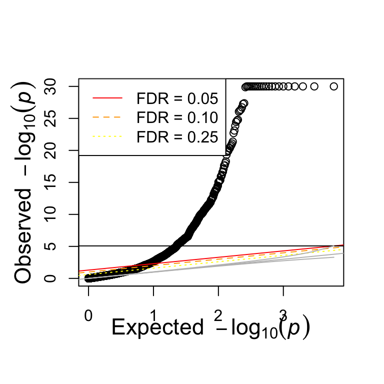
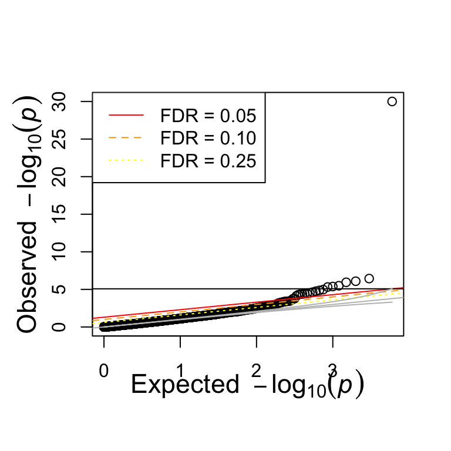
Here we threshold the test results for significance and see how GSEA enrichment (hallmark gene sets) results change. In this case, “background” are genes passing significance for the additive model test. The enriched genes are a subset of the “background” which are also \(<0.1\) bh-pval.
library(fgsea)
library(msigdbr)
gene_counts_back <- c()
gene_counts_enrich <- c()
sig_pathways_back <- c()
sig_pathways_enrich <- c()
h_gene_sets = msigdbr(species = "human", category = "H")
msigdbr_list = split(x = h_gene_sets$gene_symbol, f = h_gene_sets$gs_name)
cutoffs <- c(0.01,0.05,0.1,0.2,0.5)
for (cutoff in cutoffs) {
results_df_raw <- data.frame(nested_pvals=nested_f_test_pvals,
mlog10p=-log10(nested_f_test_pvals),
nested_bh_pval=p.adjust(nested_f_test_pvals,method="BH"),
basic_f_pvals=f_test_pvals,
basic_bh_pval=p.adjust(f_test_pvals,method="BH"),
indiv_count=inds_per_test,
genes = genes_run)
results_df_na <- results_df_raw[is.na(results_df_raw$nested_pvals),]
results_df <- na.omit(results_df_raw)
results_df <- results_df[results_df$basic_bh_pval < 0.05,]
gene_counts_back <- c(gene_counts_back, nrow(results_df))
results_df_enrich <- results_df[results_df$nested_bh_pval < 0.05,]
gene_counts_enrich <- c(gene_counts_enrich, nrow(results_df_enrich))
# Remove non-significant additive model
results_df_sorted <- results_df[order(results_df$nested_bh_pval,decreasing = TRUE),]
stats <- as.vector(results_df_sorted$nested_bh_pval)
names(stats) <- results_df_sorted$genes
fgsea_res_back <- fgsea(msigdbr_list, stats)
sig_pathways_back <- c(sig_pathways_back,nrow(fgsea_res_back[fgsea_res_back$padj < 0.1,]))
results_df_enrich_sorted <- results_df_enrich[order(results_df_enrich$nested_bh_pval,decreasing = TRUE),]
stats <- as.vector(results_df_enrich_sorted$nested_bh_pval)
names(stats) <- results_df_enrich_sorted$genes
fgsea_res_enrich <- fgsea(msigdbr_list, stats)
sig_pathways_enrich <- c(sig_pathways_enrich,nrow(fgsea_res_enrich[fgsea_res_enrich$padj < 0.1,]))
}res_df <- data.frame(cutoffs = cutoffs,
gene_counts_back=gene_counts_back,
gene_counts_enrich=gene_counts_enrich,
sig_pathways_back=sig_pathways_back,
sig_pathways_enrich=sig_pathways_enrich)
# counts_df <- data.frame(cutoffs = rep(cutoffs,2),
# gene_counts = c(gene_counts_back,gene_counts_enrich),
# type=c(rep("background",length(cutoffs)),rep("enriched",length(cutoffs))))
ggplot(res_df, aes(x=cutoffs, y=gene_counts_back)) + geom_point(size=4, color="red") |
ggplot(res_df, aes(x=cutoffs, y=gene_counts_enrich)) + geom_point(size=4, color="blue")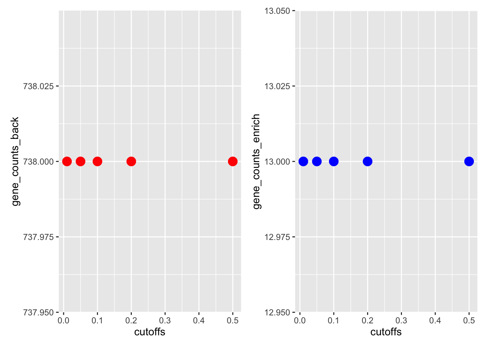
pathways_df <- data.frame(cutoffs = rep(cutoffs,2),
sig_pathway_count = c(sig_pathways_back,sig_pathways_enrich),
type=c(rep("background",length(cutoffs)),rep("enriched",length(cutoffs))))
ggplot(res_df, aes(x=cutoffs, y=sig_pathways_back)) + geom_point(size=4, color="red") |
ggplot(res_df, aes(x=cutoffs, y=sig_pathways_enrich)) + geom_point(size=4, color="blue")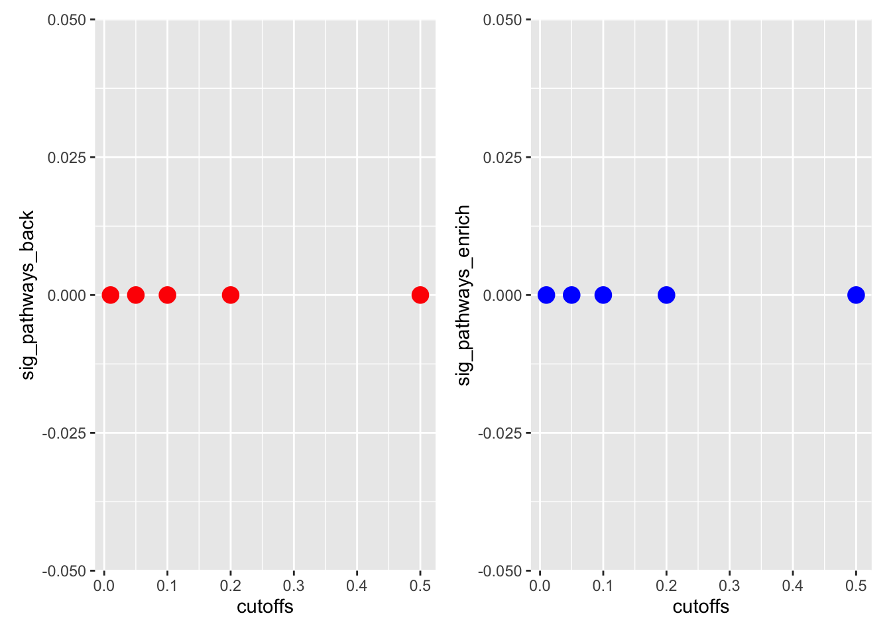
# ggplot(pathways_df, aes(x=cutoffs, y=sig_pathway_count, color=type)) + geom_point(size=4)It seems like fgsea is not so useful in deriving meaning from this data. It might be worth just taking a close look at the highly significant genes.
results_df_raw <- data.frame(nested_pvals=nested_f_test_pvals,
mlog10p=-log10(nested_f_test_pvals),
nested_bh_pval=p.adjust(nested_f_test_pvals,method="BH"),
basic_f_pvals=f_test_pvals,
basic_bh_pval=p.adjust(f_test_pvals,method="BH"),
indiv_count=inds_per_test,
genes = genes_run)
raw_genes_metadata <- gene_metadata[results_df_raw$genes,]
results_df_raw$gene_names <- raw_genes_metadata$gene_name
results_df_na <- results_df_raw[is.na(results_df_raw$nested_pvals),]
results_df <- data.frame(na.omit(results_df_raw))
keep_cols <- c("gene_names", "nested_bh_pval")
results_df <- results_df[results_df$basic_bh_pval < 0.1,]
results_df_write <- results_df[,keep_cols]
write.csv(results_df_write, file.path(dset_dir,"0.1_background_geneset_enformer_epistasis.csv"), row.names = FALSE, col.names = 1)
results_df_enrich <- results_df[results_df$nested_bh_pval < 0.1,]
results_df_enrich_write <- results_df_enrich[,keep_cols]
write.csv(results_df_enrich_write, file.path(dset_dir,"0.1_foreground_geneset_enformer_epistasis.csv"), row.names = FALSE)gene_length: 27801
# library(ggrepel)
# library(reshape2)
#
# enformer_ind_exp <- haplo1_geu + haplo2_geu
#
# individual_metadata_sub <- individual_metadata[rownames(individual_metadata) %in% colnames(geuvadis_enf),]
# table(individual_metadata_sub$`Superpopulation code`)
#
# CFAP45_expression_df <- data.frame(individuals=colnames(geuvadis_enf), geuvadis=as.numeric(geuvadis_enf["ENSG00000213085",]),
# enformer=as.numeric(enformer_ind_exp["ENSG00000213085",]), haplo1=as.numeric(haplo1_geu["ENSG00000213085",]),
# haplo2=as.numeric(haplo2_geu["ENSG00000213085",]),
# population = as.character(individual_metadata_sub[colnames(geuvadis_enf),"Superpopulation code"]))
#
# CFAP45_expression_df$haplo_diff <- abs(CFAP45_expression_df$haplo2-CFAP45_expression_df$haplo1)
# CFAP45_expression_df$haplo_prod <- CFAP45_expression_df$haplo2*CFAP45_expression_df$haplo1
#
# CFAP45_expression_df_all <- melt(CFAP45_expression_df, measure.vars=c("haplo1","haplo2"))
#
# CFAP45_expression_df_no_outlier <- CFAP45_expression_df[!CFAP45_expression_df$individuals %in% c("NA19129","NA19175"),]
#
# CFAP45_expression_df_all_no_outlier <- melt(CFAP45_expression_df_no_outlier, measure.vars=c("haplo1","haplo2"))
#
# # Plot enformer vs. geuvadis expression
#
# ge <- ggplot(CFAP45_expression_df, aes(x=geuvadis,y=enformer, label=individuals, col=population)) + geom_point(alpha=0.5) + geom_text_repel() +
# geom_line(aes(group=variable))
# ggExtra::ggMarginal(ge, groupFill = TRUE)
#
#
# ge_no <- ggplot(CFAP45_expression_df_no_outlier, aes(x=geuvadis,y=enformer, label=individuals, col=population)) + geom_point(alpha=0.5) + geom_text_repel()
# ggExtra::ggMarginal(ge_no, groupFill = TRUE)
#
# # Plot both haplotype expression vs. total
# ge_both_haplo <- ggplot(CFAP45_expression_df_all, aes(x=geuvadis,y=value, label=individuals, col=population)) + geom_point(alpha=0.5) + geom_text_repel()+
# geom_line(aes(group=individuals), alpha=0.5)
# ggExtra::ggMarginal(ge_both_haplo, groupFill = TRUE)
#
# ge_both_haplo <- ggplot(CFAP45_expression_df_all_no_outlier, aes(x=geuvadis,y=value, label=individuals, col=population)) + geom_point(alpha=0.5) + geom_text_repel()+
# geom_line(aes(group=individuals), alpha=0.5)
# ggExtra::ggMarginal(ge_both_haplo, groupFill = TRUE)
#
#
#
#
#
#
#
# ge_h1 <- ggplot(CFAP45_expression_df, aes(x=geuvadis,y=haplo1, label=individuals, col=population)) + geom_point(alpha=0.5) + geom_text_repel()
# ggExtra::ggMarginal(ge_h1, groupFill = TRUE)
# ge_h2 <- ggplot(CFAP45_expression_df, aes(x=geuvadis,y=haplo2, label=individuals, col=population)) + geom_point(alpha=0.5) + geom_text_repel()
# ggExtra::ggMarginal(ge_h2, groupFill = TRUE)
#
# ge_no_h1 <- ggplot(CFAP45_expression_df_no_outlier, aes(x=geuvadis,y=haplo1, label=individuals, col=population)) + geom_point(alpha=0.5) + geom_text_repel()
# ggExtra::ggMarginal(ge_no_h1, groupFill = TRUE)
# ge_no_h2 <- ggplot(CFAP45_expression_df_no_outlier, aes(x=geuvadis,y=haplo2, label=individuals, col=population)) + geom_point(alpha=0.5) + geom_text_repel()
# ggExtra::ggMarginal(ge_no_h2, groupFill = TRUE)gene length: 42443
UPDATE: This effect seems to disappear when centering the window on the CSS.
The EPCAM gene is highly significant for the epistasis interaction test (bh-pval=\(4.067394e-208\)). We can plot this gene a bit further to get a better idea.
First let’s examine how the personalized predictions of the gene compare with Geuvadis:
Recompute interactive model weights
model_single_gene_return_weights <- function(lm_df_filt) {
summed_model <- lm(gt~both,lm_df_filt)
basic_model <- lm(gt~haplo1+haplo2,lm_df_filt)
basic_coef = basic_model$coefficients
basic_sum <- summary(basic_model)
print(basic_sum)
if (!is.numeric(basic_sum$fstatistic[[1]])) {
basic_f_stat = NA
} else {
basic_f_stat = df(basic_sum$fstatistic[[1]],basic_sum$fstatistic[[2]],basic_sum$fstatistic[[3]])
}
r2 <- summary(basic_model)$adj.r.squared
int_model <- lm(gt~haplo1*haplo2,lm_df_filt)
int_sum <- summary(int_model)
print(int_sum)
nested_anova <- anova(basic_model,int_model,test="F")[6][2,]
cor_val <- cor(predict(basic_model),lm_df_filt$gt)
cor_val_int <- cor(predict(int_model),lm_df_filt$gt)
pred_basic <- predict(basic_model)
print(pred_basic)
pred_int <- predict(int_model)
return(list(nested_anova,basic_f_stat,r2, pred_basic, pred_int))
}
nested_f_test_pvals <- c()
f_test_pvals <- c()
genes_run <- c()
inds_per_test <- c()
r2_additive <- c()
r_additive <- c()
r_raw <- c()
gene_list <- rownames(haplo1_geu)
i = "ENSG00000119888"
cur_df <- na.omit(data.frame(gt=t(geuvadis_enf[i,]),
haplo1=t(haplo1_geu[i,]),
haplo2=t(haplo2_geu[i,]),
both = t(haplo1_geu[i,])+t(haplo2_geu[i,])
))
cur_df <- na.omit(cur_df)
colnames(cur_df) <- c("gt","haplo1","haplo2","both")
o <- model_single_gene_return_weights(cur_df)
Call:
lm(formula = gt ~ haplo1 + haplo2, data = lm_df_filt)
Residuals:
Min 1Q Median 3Q Max
-0.55940 -0.17107 -0.04218 0.13716 1.23886
Coefficients:
Estimate Std. Error t value Pr(>|t|)
(Intercept) -8.505007 0.147136 -57.80 <2e-16 ***
haplo1 0.085067 0.001834 46.38 <2e-16 ***
haplo2 0.065552 0.001845 35.52 <2e-16 ***
---
Signif. codes: 0 '***' 0.001 '**' 0.01 '*' 0.05 '.' 0.1 ' ' 1
Residual standard error: 0.2446 on 443 degrees of freedom
Multiple R-squared: 0.8879, Adjusted R-squared: 0.8874
F-statistic: 1754 on 2 and 443 DF, p-value: < 2.2e-16
Call:
lm(formula = gt ~ haplo1 * haplo2, data = lm_df_filt)
Residuals:
Min 1Q Median 3Q Max
-0.49294 -0.12693 -0.02067 0.10318 1.13533
Coefficients:
Estimate Std. Error t value Pr(>|t|)
(Intercept) 80.435644 5.891638 13.65 <2e-16 ***
haplo1 -1.494835 0.104645 -14.29 <2e-16 ***
haplo2 -1.426001 0.098795 -14.43 <2e-16 ***
haplo1:haplo2 0.026506 0.001755 15.10 <2e-16 ***
---
Signif. codes: 0 '***' 0.001 '**' 0.01 '*' 0.05 '.' 0.1 ' ' 1
Residual standard error: 0.1989 on 442 degrees of freedom
Multiple R-squared: 0.926, Adjusted R-squared: 0.9255
F-statistic: 1845 on 3 and 442 DF, p-value: < 2.2e-16
HG00096 HG00097 HG00099 HG00100 HG00101
-0.0523254019 -1.2405827868 -0.0414719321 0.2532733754 0.1023902231
HG00102 HG00103 HG00104 HG00105 HG00106
0.1500385537 0.1922299671 0.2458288314 0.1666678061 -0.0411292350
HG00108 HG00109 HG00110 HG00111 HG00112
0.0856060289 0.3486417944 0.1719694765 0.0230546682 0.4274864555
HG00114 HG00115 HG00116 HG00117 HG00118
-0.0635557578 0.3253091727 0.2396630645 0.0714852885 0.2230854324
HG00119 HG00120 HG00121 HG00122 HG00123
0.1516033292 0.2533410458 0.1009169628 8.4309705733 0.2358669760
HG00125 HG00126 HG00127 HG00128 HG00129
0.1885335631 -0.1730825553 0.2419462854 0.3607917068 0.1501783914
HG00130 HG00131 HG00132 HG00133 HG00134
0.2771954972 0.2972449904 0.2411650201 0.2073747535 0.1839822056
HG00135 HG00136 HG00137 HG00139 HG00141
-0.0404951581 0.0943895002 0.2177059058 0.3158408100 0.1956255704
HG00142 HG00143 HG00145 HG00146 HG00148
0.0110292701 -0.2208677849 0.1683470499 -0.0632825351 -0.1217851618
HG00149 HG00150 HG00151 HG00152 HG00154
0.0359686756 0.1323073094 -0.0098673075 0.2464151686 0.2964189515
HG00155 HG00156 HG00157 HG00158 HG00159
0.0143549815 -0.0689862265 0.3475434625 -0.2849897180 0.2124054121
HG00160 HG00171 HG00173 HG00174 HG00176
0.2008417469 0.1144653279 -0.2655522745 0.1715783962 0.0215056823
HG00177 HG00178 HG00179 HG00180 HG00181
0.1228975396 0.1440968423 0.2008628766 -0.0229555599 0.0200455616
HG00182 HG00183 HG00185 HG00186 HG00187
0.0592165255 0.1071523548 0.4219689131 0.0296134427 0.3482101455
HG00188 HG00189 HG00231 HG00232 HG00233
0.2726666695 0.1899052494 -0.1629995968 0.1994313641 0.3758280432
HG00234 HG00235 HG00236 HG00238 HG00239
0.1904853220 -0.0294961034 0.3160229024 -0.0891826884 0.0034454304
HG00240 HG00242 HG00243 HG00244 HG00245
-0.0963268133 0.1020996337 0.1722687092 0.1924954975 0.1757588093
HG00246 HG00249 HG00250 HG00251 HG00252
-0.0636729525 -0.0398641140 0.2054713797 0.0069353296 0.2282637640
HG00253 HG00255 HG00256 HG00257 HG00258
0.1789901508 0.2292574880 -0.0566339252 0.2568499700 0.2038501317
HG00259 HG00261 HG00262 HG00263 HG00264
-0.2009371439 0.1700947915 0.0464145195 0.3311689655 0.0490945599
HG00265 HG00266 HG00267 HG00268 HG00269
0.1776731049 0.2871816903 0.0489802644 0.1519437913 -0.0811974231
HG00271 HG00272 HG00273 HG00274 HG00275
-0.1011900441 0.2056720899 -0.0823446790 0.3046182994 0.0932250743
HG00276 HG00277 HG00278 HG00280 HG00281
0.1687261562 -0.0286758017 0.2052904332 -0.1276594106 0.2031416312
HG00282 HG00284 HG00285 HG00306 HG00308
-0.0318815741 0.3154579615 -0.2525072427 0.1753755263 0.0376144788
HG00309 HG00310 HG00311 HG00312 HG00313
0.1831059280 0.3578551042 0.0925177860 0.2316576694 0.1202888094
HG00315 HG00319 HG00320 HG00321 HG00323
0.1186677178 0.3064640882 -0.1409884094 0.2712229593 0.1483420522
HG00324 HG00325 HG00326 HG00327 HG00328
-0.0306837274 0.2431133200 0.1448383496 0.2222347255 0.0821896928
HG00329 HG00330 HG00331 HG00332 HG00334
0.2427724956 0.1204219333 0.2086531266 0.1336426165 0.2412831540
HG00335 HG00336 HG00337 HG00338 HG00339
0.2275556372 0.0997961475 -0.0143054276 0.2109615915 0.1942743204
HG00341 HG00342 HG00343 HG00344 HG00345
-0.0852839066 0.2041864792 -0.0278272480 0.2560298080 0.1011345321
HG00346 HG00349 HG00350 HG00351 HG00353
0.1743479819 -0.0315320761 -0.0965029340 0.1335667779 0.2819642822
HG00355 HG00356 HG00358 HG00359 HG00360
0.3331153672 0.0841719092 -0.0253332120 0.1007328176 0.2488517035
HG00361 HG00362 HG00364 HG00365 HG00366
0.0061154967 -0.0365093943 0.3382635715 0.2127133688 0.1752407635
HG00367 HG00369 HG00371 HG00372 HG00373
0.4229066564 0.1523959029 0.1447034905 0.1418189535 0.2054557935
HG00375 HG00376 HG00377 HG00378 HG00379
0.2154854809 0.2086601474 0.0176986446 -0.0067997861 -0.0936541408
HG00380 HG00381 HG00382 HG00383 HG00384
0.1618025165 -0.0620831741 0.1808162918 -0.0754383990 0.1712204361
HG01334 HG01789 HG01790 HG01791 HG02215
0.2371644047 0.2205273733 -0.0317625586 0.1659344913 0.1844196764
NA06984 NA06985 NA06986 NA06989 NA06994
0.3829286470 0.1911063914 0.2581204718 0.1997793769 -0.0700888989
NA07037 NA07048 NA07051 NA07056 NA07357
0.2422466525 0.1940650163 0.2470599474 0.1751349915 -0.0841713187
NA10847 NA10851 NA11829 NA11830 NA11831
0.1734326340 0.2233413739 -0.0127608325 -0.1571690158 -0.0673231464
NA11832 NA11840 NA11843 NA11881 NA11892
0.0988928279 0.3508169779 -0.1552002321 -0.0572666095 0.0141932232
NA11893 NA11894 NA11918 NA11920 NA11930
0.4229034505 0.2894349789 -0.2109463874 0.1438631538 0.1582098045
NA11931 NA11992 NA11995 NA12004 NA12005
0.2581650087 0.2909587568 0.0389908639 0.2095790074 -0.0506598583
NA12006 NA12043 NA12044 NA12045 NA12058
0.1473868205 0.0604646101 -0.0031792056 0.3103164364 0.3035323382
NA12144 NA12154 NA12155 NA12156 NA12234
0.1952067343 0.1186927759 0.3225602935 -0.0563251456 -0.0827496917
NA12249 NA12272 NA12273 NA12275 NA12282
0.1736739358 0.2193207079 11.1776924118 0.2117227914 -0.0610877914
NA12283 NA12286 NA12287 NA12340 NA12341
0.0682505023 0.3088733316 0.1714313899 0.2304067657 -0.0677877731
NA12342 NA12347 NA12348 NA12383 NA12399
0.1894298092 0.1967591279 0.2064755275 -0.0085364950 0.2264074953
NA12400 NA12413 NA12489 NA12546 NA12716
-0.0519769008 0.2065139535 0.1513953252 0.2833053201 0.3217564651
NA12717 NA12718 NA12749 NA12750 NA12751
-0.1213818102 0.0293505201 0.2628422351 -0.0724038728 0.2288315776
NA12760 NA12761 NA12762 NA12763 NA12775
0.2046050428 0.2172193813 0.1739687170 0.2909881065 0.1810319686
NA12776 NA12777 NA12778 NA12812 NA12813
0.2319671196 0.2009272939 0.1897670700 0.1363320509 0.1638580768
NA12814 NA12815 NA12827 NA12829 NA12830
0.2271001523 0.2276152283 0.1516896724 0.0987660186 0.3566606210
NA12842 NA12843 NA12872 NA12873 NA12874
0.2433593147 -0.0262925918 0.2086697992 0.2028102181 -0.0842060500
NA12889 NA12890 NA18486 NA18488 NA18489
0.1231052754 -0.0343210241 -0.1886487965 -0.0393158273 -0.1749215441
NA18499 NA18502 NA18510 NA18511 NA18517
-0.0486446106 -0.3100271984 -0.3594929925 -0.3110394114 -0.2219428138
NA18519 NA18520 NA18858 NA18861 NA18867
-0.3227919925 -0.3766036762 -0.3270755316 -0.2170516217 -0.3458465844
NA18868 NA18907 NA18908 NA18909 NA18910
-0.2175211952 0.1497197202 -0.1920450480 -0.2846910179 -0.3158716663
NA18912 NA18916 NA18917 NA18923 NA18933
-0.0374984290 -0.0111592707 -0.1517693793 -0.2700198422 -0.2769615572
NA18934 NA19092 NA19093 NA19095 NA19096
0.0187780190 -0.0584283464 -0.2850127242 -0.2722401477 -0.2390154542
NA19098 NA19099 NA19102 NA19107 NA19108
-0.2839092310 -0.2758142152 -0.3400617393 -0.3029230199 -0.3284466477
NA19113 NA19114 NA19116 NA19117 NA19118
-0.1639871560 -0.2556407015 0.0615160329 0.1324080985 -0.2362956750
NA19119 NA19121 NA19129 NA19130 NA19131
-0.2998258056 -0.1617143928 -0.2009475602 -0.1686647431 0.2469425061
NA19137 NA19138 NA19141 NA19143 NA19144
-0.3009571133 -0.0896757342 -0.1973716566 0.3992278247 -0.3461029498
NA19146 NA19147 NA19149 NA19152 NA19159
-0.3237166105 -0.1373709811 -0.1506402198 -0.1990903038 -0.3401558483
NA19160 NA19171 NA19172 NA19175 NA19184
0.0099791978 -0.3279676016 -0.2809061007 -0.2799843763 -0.2146838726
NA19185 NA19189 NA19190 NA19197 NA19198
-0.2082170296 0.0229903670 0.1202725301 -0.2725100932 -0.1787960625
NA19200 NA19201 NA19204 NA19206 NA19207
-0.1273976168 -0.2256051838 -0.3358222482 0.0271511392 -0.2301780407
NA19209 NA19210 NA19213 NA19214 NA19222
-0.0880518686 -0.2568070772 -0.4252887846 -0.2839201339 0.0122230503
NA19223 NA19225 NA19235 NA19236 NA19247
-0.1501686929 -0.1806127044 0.0085954105 -0.3459011774 -0.0219065426
NA19248 NA19256 NA19257 NA20502 NA20503
-0.3629904887 0.1127819191 -0.2131088776 -0.0109339658 0.2182055546
NA20504 NA20505 NA20506 NA20507 NA20508
0.1825774828 0.2883665430 -0.0849449637 0.0158026041 0.2195117832
NA20509 NA20510 NA20512 NA20513 NA20514
0.0982216226 0.1940566455 0.2131884229 0.1355584028 -0.0005715766
NA20515 NA20516 NA20517 NA20518 NA20519
0.3272154224 0.0967896083 0.2991786527 0.1380582527 -0.0409845225
NA20520 NA20521 NA20524 NA20525 NA20527
0.2495312522 0.2743855810 0.4124386953 0.2011851333 -0.0372681850
NA20528 NA20529 NA20530 NA20531 NA20532
0.2028233522 0.0164674772 0.1881849961 0.2002307573 0.0842665303
NA20534 NA20535 NA20536 NA20537 NA20538
0.2308355638 0.2160087996 -0.0249642446 0.0461070521 -0.1600927950
NA20539 NA20540 NA20541 NA20542 NA20543
0.0212543750 -0.1291135474 -0.0747015105 0.2432408468 0.3010962429
NA20544 NA20581 NA20582 NA20585 NA20586
0.0944518606 0.2927711374 0.2806560678 0.1766029243 0.1527573440
NA20588 NA20589 NA20752 NA20754 NA20756
0.0793631915 0.0998151194 -0.0651030629 0.2383750373 0.2870186682
NA20757 NA20758 NA20759 NA20760 NA20761
0.2309814218 0.1524726293 -0.0559386386 0.1752681892 0.2442855628
NA20765 NA20766 NA20768 NA20769 NA20770
-0.0424310498 -0.0395875246 0.2182184610 -0.0228363836 0.2251328944
NA20771 NA20772 NA20773 NA20774 NA20778
0.2239600871 0.0233394041 0.1495600670 0.0722998448 -0.1900139918
NA20783 NA20785 NA20786 NA20787 NA20790
-0.0445612514 0.1329250761 0.0501805723 -0.1199795896 0.1838643223
NA20792 NA20795 NA20796 NA20797 NA20798
0.2143449950 -0.0101320238 0.1471533335 0.1165487708 0.0427004679
NA20799 NA20800 NA20801 NA20802 NA20803
0.2375919471 0.0132482104 0.2482383778 0.1174085869 0.2421124361
NA20804 NA20805 NA20806 NA20807 NA20808
-0.2791623495 -0.0398579159 0.4691795163 0.0418063990 -0.0755354261
NA20809 NA20810 NA20811 NA20812 NA20813
0.3023214441 0.1827149731 0.1702566281 0.0841263256 0.1552879801
NA20814 NA20815 NA20816 NA20819 NA20826
-0.1595174615 0.0167263301 0.1362271525 0.1039902015 0.2918193646
NA20828
0.0157381600 nested_f_test_pvals <- c(nested_f_test_pvals,o[1])
f_test_pvals <- c(f_test_pvals,o[2])
genes_run <- c(genes_run, gene_list[i])
inds_per_test <- c(inds_per_test, nrow(cur_df))
r2_additive <- c(r2_additive,o[3])
r_additive <- c(r_additive,o[4])
r_raw <- c(r_raw,cor(cur_df$gt,cur_df$both))library(ggrepel)
enformer_ind_exp <- haplo1_geu + haplo2_geu
individual_metadata_sub <- individual_metadata[rownames(individual_metadata) %in% colnames(geuvadis_enf),]
table(individual_metadata_sub$`Superpopulation code`)
AFR EUR
81 365 h1 = as.numeric(haplo1_geu["ENSG00000119888",])
h2 = as.numeric(haplo2_geu["ENSG00000119888",])
EPCAM_expression_df <- data.frame(individuals=colnames(geuvadis_enf), geuvadis=as.numeric(geuvadis_enf["ENSG00000119888",]),
enformer=as.numeric(enformer_ind_exp["ENSG00000119888",]), haplo1=h1,
haplo2=h2,
population = as.character(individual_metadata_sub[colnames(geuvadis_enf),"Superpopulation code"]),
sum = h1+h2,
model_sum = as.numeric(o[[4]]),
interaction_weights_sum = as.numeric(o[[5]]))
ge <- ggplot(EPCAM_expression_df, aes(x=geuvadis,y=enformer, label=individuals, col=population)) + geom_point(alpha=0.5) + geom_text_repel()
ggExtra::ggMarginal(ge, groupFill = TRUE)
EPCAM_expression_df_no_outlier <- EPCAM_expression_df[!EPCAM_expression_df$individuals %in% c("HG00122","NA12273"),]
ge_no <- ggplot(EPCAM_expression_df_no_outlier, aes(x=geuvadis,y=enformer, label=individuals, col=population)) + geom_point(alpha=0.5) + geom_text_repel()
ggExtra::ggMarginal(ge_no, groupFill = TRUE)
ge_h1 <- ggplot(EPCAM_expression_df, aes(x=geuvadis,y=haplo1, label=individuals, col=population)) + geom_point(alpha=0.5) + geom_text_repel()
ggExtra::ggMarginal(ge_h1, groupFill = TRUE)
ge_h2 <- ggplot(EPCAM_expression_df, aes(x=geuvadis,y=haplo2, label=individuals, col=population)) + geom_point(alpha=0.5) + geom_text_repel()
ggExtra::ggMarginal(ge_h2, groupFill = TRUE)
ge_no_h1 <- ggplot(EPCAM_expression_df_no_outlier, aes(x=geuvadis,y=haplo1, label=individuals, col=population)) + geom_point(alpha=0.5) + geom_text_repel()
ggExtra::ggMarginal(ge_no_h1, groupFill = TRUE)
ge_no_h2 <- ggplot(EPCAM_expression_df_no_outlier, aes(x=geuvadis,y=haplo2, label=individuals, col=population)) + geom_point(alpha=0.5) + geom_text_repel()
ggExtra::ggMarginal(ge_no_h2, groupFill = TRUE)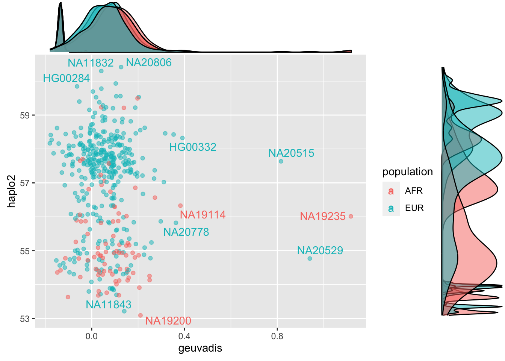
ge_no_sum <- ggplot(EPCAM_expression_df_no_outlier, aes(x=geuvadis,y=sum, label=individuals, col=population)) + geom_point(alpha=0.5) + geom_text_repel() + xlab("geuvadis expression") + ylab("summed haplotype expression prediction")
ge_no_sum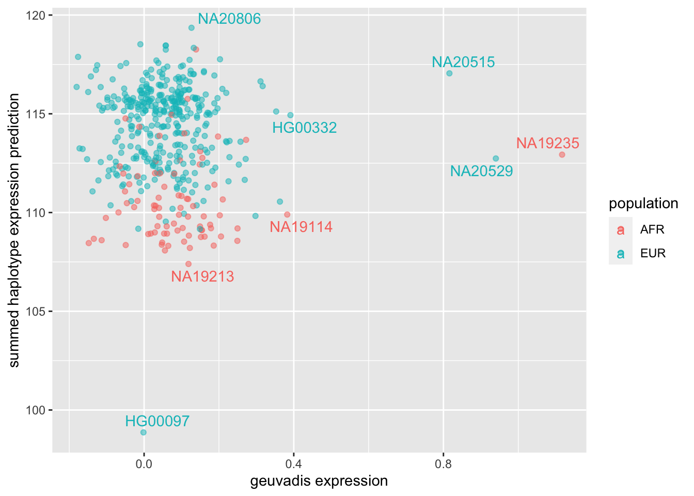
ge_no_sum_model <- ggplot(EPCAM_expression_df_no_outlier, aes(x=geuvadis,y=model_sum, label=individuals, col=population)) + geom_point(alpha=0.5) + geom_text_repel() + xlab("geuvadis expression") + ylab("summed haplotype expression prediction")
ge_no_sum_model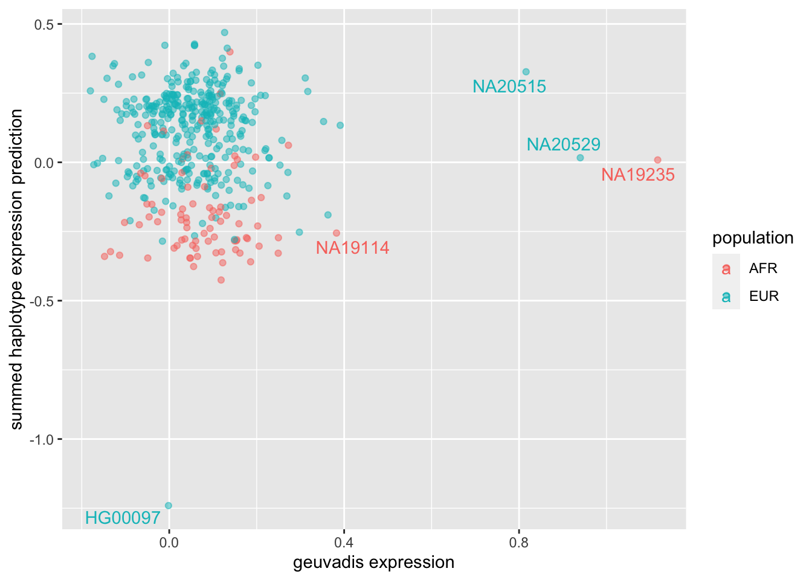
ge_no_sum_with_interact <- ggplot(EPCAM_expression_df_no_outlier, aes(x=geuvadis, y=interaction_weights_sum, label=individuals, col=population)) + geom_point(alpha=0.5) + geom_text_repel() + xlab("geuvadis expression") + ylab("interaction model prediction")
ge_no_sum_with_interact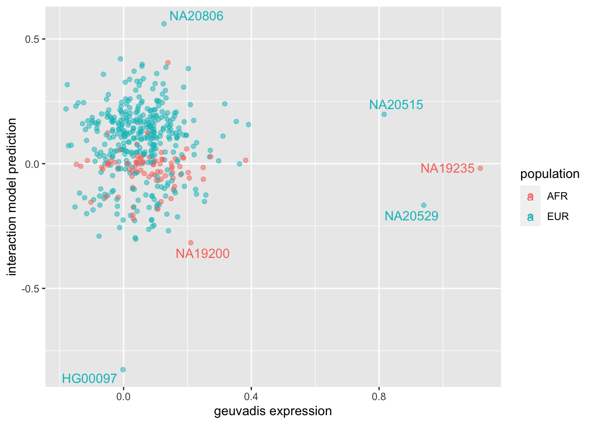
ge_sum <- ggplot(EPCAM_expression_df, aes(x=geuvadis,y=sum, label=individuals, col=population)) + geom_point(alpha=0.5) + geom_text_repel()
ge_sum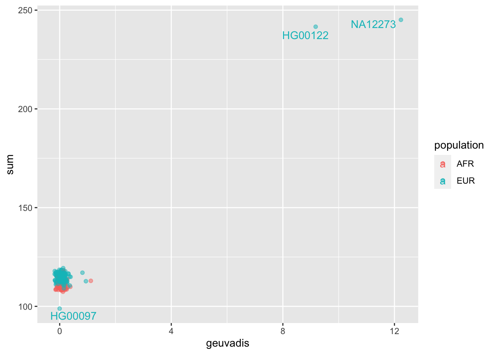
ge_sum_with_interact <- ggplot(EPCAM_expression_df, aes(x=geuvadis, y=interaction_weights_sum, label=individuals, col=population)) + geom_point(alpha=0.5) + geom_text_repel()
ge_sum_with_interact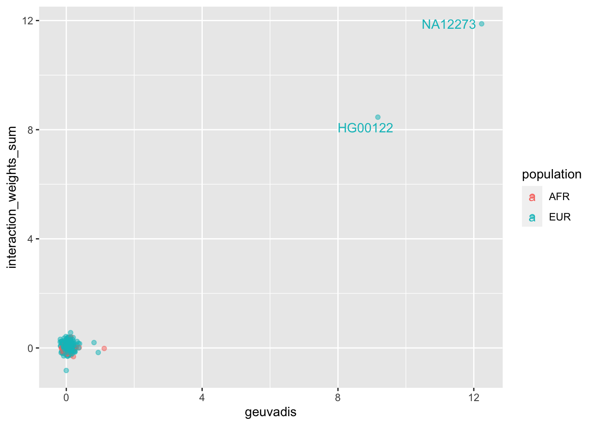
cor_cols <- c("geuvadis","sum","model_sum","interaction_weights_sum")
cor(EPCAM_expression_df[,cor_cols]) geuvadis sum model_sum interaction_weights_sum
geuvadis 1.0000000 0.9349116 0.9422852 0.9623133
sum 0.9349116 1.0000000 0.9921747 0.9715252
model_sum 0.9422852 0.9921747 1.0000000 0.9791876
interaction_weights_sum 0.9623133 0.9715252 0.9791876 1.0000000EPCAM_expression_df_no_outlier_flat = melt(EPCAM_expression_df_no_outlier, measure.vars=c("haplo1","haplo2"))
ge_no_both_haplo <- ggplot(EPCAM_expression_df_no_outlier_flat, aes(x=geuvadis,y=value, shape=variable)) + geom_point(alpha=0.5) + geom_line(aes(group=individuals), alpha=0.5) + ylim(c(55,63))
ge_no_both_haplo
ggExtra::ggMarginal(ge_no_both_haplo, groupFill = TRUE)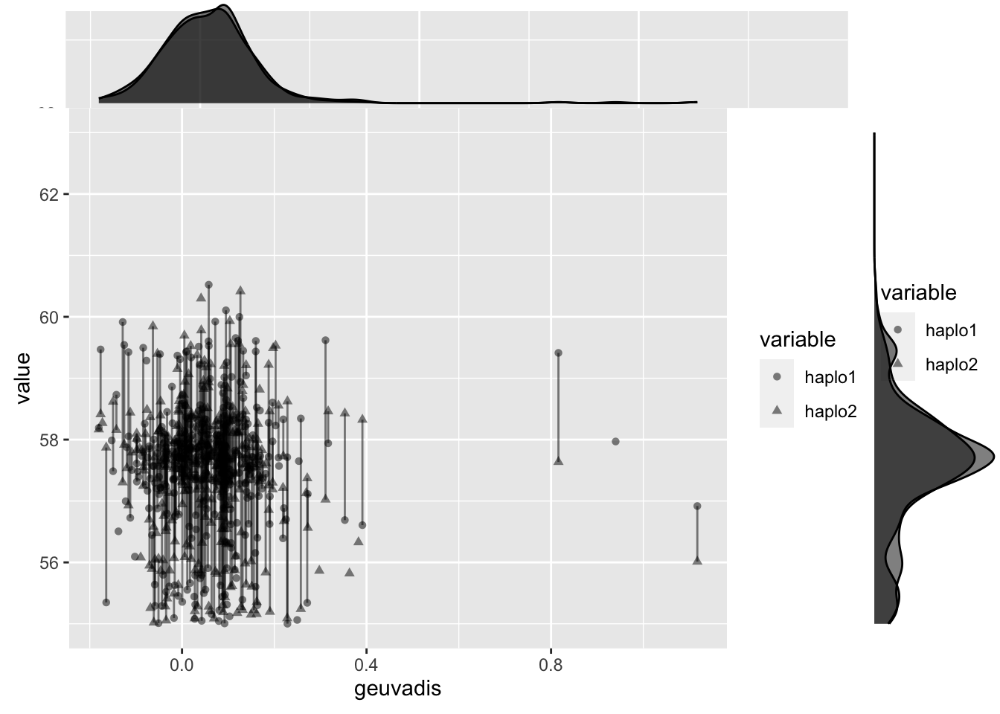
Some takeaways: